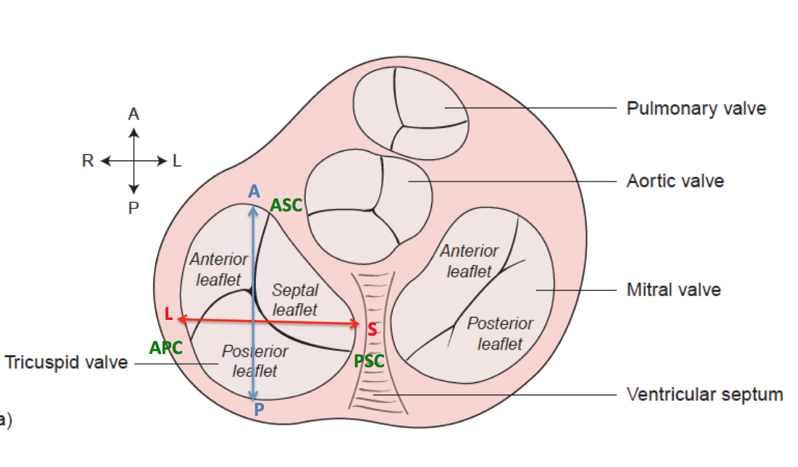

Points:
- A=Anterior
- P=Posterior
- S=Septal
- L=Lateral
- ASC=Anteroseptal commissure (based on leaflets)
- PSC=Posteroseptal commissure (based on leaflets)
- APC=Anterior-posterior commissure (based on leaflets)
Distances:
- AP=Anteroposterior distance
- LS=Septolateral distance
- ASC-PSC distance
- ASC-PSC distance along annulus curve
- PSC-APC distance
- PSC-APC distance along annulus curve
- APC-ASC distance
- APC-ASC distance along annulus curve